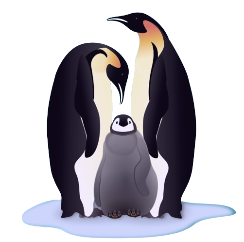

Inicio...Página2
El pingüino emperador es la mayor de las especies de pingüinos, se aparean y se reproducen en el hielo de la Antártida. Ellos hacen un viaje terrible por el hielo hasta un máximo de 75 millas (120 kilómetros) para llegar a las colonias de cría durante el gélido invierno antártico. Mientras que esta vida puede ser bastante austera, por ahora es sostenible: Los pingüinos emperador son clasificados de menor preocupación por la Unión Internacional para la Conservación de la Naturaleza (UICN) de la Lista Roja de Especies Amenazadas.
El pingüino de Galápagos, endémico de la Las Islas Galápagos alrededor del ecuador en el Océano Pacífico, ha experimentado una disminución de la población de más de un 50 por ciento desde la década de 1970, y se enfrenta a una probabilidad de un 30 por ciento de extinción en este siglo. La destrucción del hábitat por la creciente población humana y el turismo en las islas, junto con la introducción de gatos callejeros que se alimentan de los pingüinos, son sus mayores amenazas.
Derechos reservados--2024--Kendall Reyes Monge